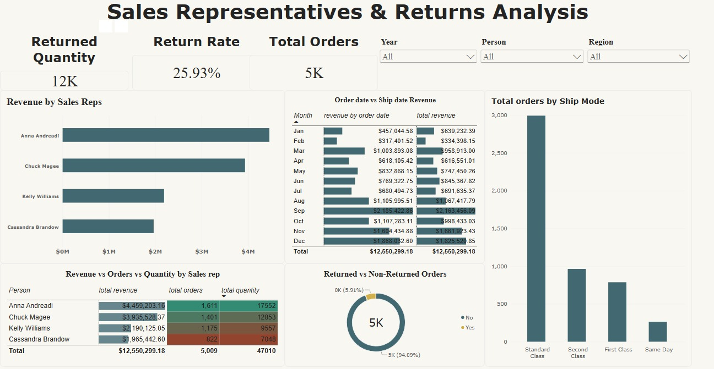
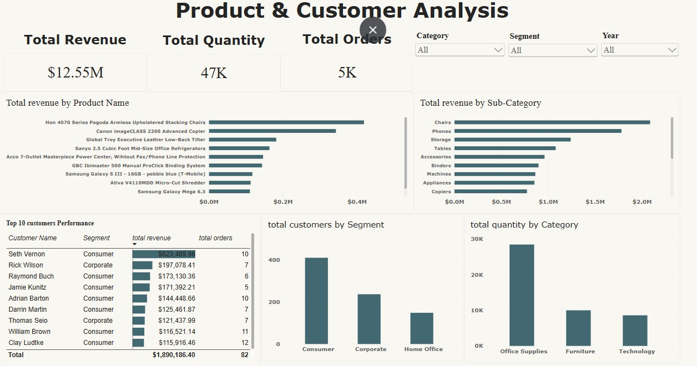

Dashboards
Power BI Dashboards

Sales Performance Overview
Provides an executive overview of sales performance through key revenue, order, customer, quantity, and return metrics, along with major sales trends and business dimensions.

Sales Representatives & Returns
Analyzes sales representative performance, return rates, returned versus non-returned orders, shipping modes, and revenue by order and ship date.

Product & Customer Analysis
Provides detailed analysis of top products, sub-categories, customers, customer segments, and quantity sold across product categories.